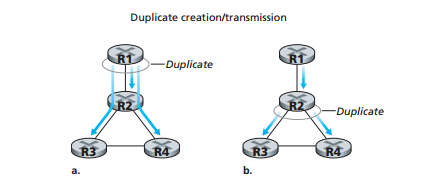
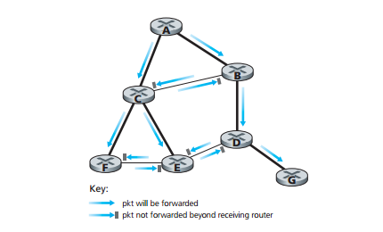
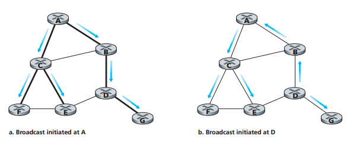

In broadcast routing, the network layer provides a service of delivering a packet sent from a source node to all other nodes in the network.
One approach to accomplish broadcast communication is the N-way-unicast approach. In this approach, given N destination nodes, the source node makes N copies of the packet, addresses each copy to a different destination, and then transmits the N copies to the N destinations using unicast routing.
No new network-layer routing protocol, packet-duplication, or forwarding functionality is needed. However, there are problems with this approach (Diagram a.):
Flooding is an approach in which the source node sends a copy of the packet to all of its neighbors. Eventually, every node in the graph will receive a copy of the broadcast packet. Unfortunately, there is a flaw: If the graph has cycles, then one or more copies of each broadcast packet will cycle indefinitely. It will also create and forward multiple copies of the broadcast packet, each of which will create multiple copies of itself. This is called a broadcast storm, and would render the network useless.
The key to avoiding a broadcast storm is for a node to choose when to or not to flood a packet, checking if it already received and flooded an earlier copy of the packet. In sequence-number-controlled-flooding, a source node puts its address/unique identifier and broadcast sequence number into a broacast packet, and then sends it to all of its neighbors.
Another approach to controlled flooding is reverse path forwarding (RPF). When a router receives a broadcast packet with a given source address, it transmits the packet on all of its outgoing links, except the one it received from, only if the packet arrived on the link that is on its own shortest unicast path back to the source. The picture below illustrates RPF:
Sequence-number-controlled flooding and RPF avoid broadcast storms, but they do not completely avoid the transmission of redundant packets. A spanning-tree is a tree that contains each and every node in a graph. If each link has an associated cost and the cost of a tree is the sum of the link costs, then a spanning tree whose cost is the minimum of all the graph's spanning trees is called a minimum spanning tree.
In the center-based approach to building a spanning tree, a center node is defined. Nodes then unicast tree-join messages addressed to the center node. A tree-join message is forwarded using unicast routing toward the center until it either arrives at a node that already belongs to a spanning tree or arrives at the center.